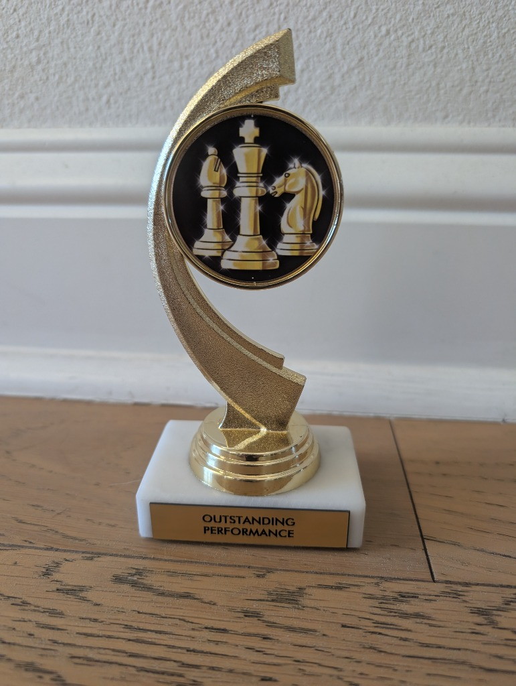

Small moves. Big dreams.
Vihaan's
Game Room.
You already have what it takes
to make your next great move.
Vihaan has beaten Kanishk M., the Arkansas K-5 state champion, in a Lichess game.
Family-stated · Arkansas K-5 champion, 2025
Opening your Game Room…
Daily Quest + Streak
New quest at 6:00 PM CST · Chicago time
10 puzzles. 1 game.
Your next adventure starts here.
Public puzzle totals don't tell us what you did today.
Public game evidence appears here.
● Quest earned ◐ In progress ? Not verified
Look how far you've come.
Finding your public rating trail…
Every win is proof.
Good thinking. Brave moves.
You did that.
Your three favorite openings
Your last 10 adventures.
| Date | You play | Opponent | Opening | Result | Replay |
|---|
Your next completed rated game can appear here.
Press play. See your spark.
Losses are treasure maps.
Be a chess detective.
Find one move you'd try next time.
You can do this.
You're already on your way.
Keep making your next great move.
First trophy
Tulsa · Outstanding Performance · 4.0 / 5 · Oct 24, 2026
Beat a state champion
You beat Kanishk M. in a Lichess game. Family-stated.
800+ US Chess rating
Regular 811. Your work is adding up.
Next adventure: NWA Fall Scholastic
Registered · Sat Nov 28, 2026 · Fayetteville, AR
On the way: 900, then 1000
Family goal: US Chess Regular 811 → 1000 by spring 2027.
Arkansas Individual Scholastic Championship
Spring 2027 · Exact date to be announced